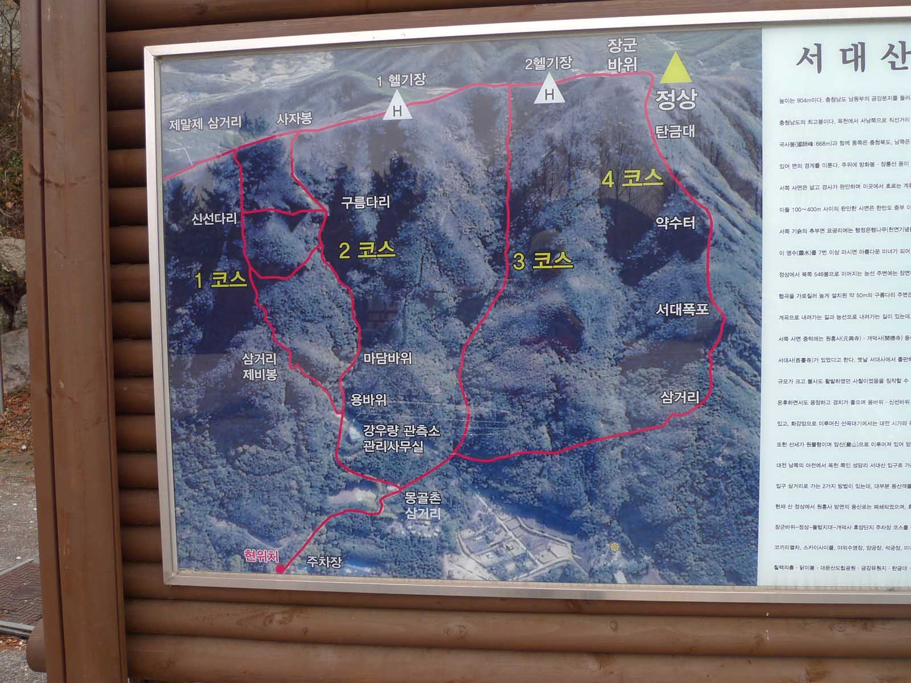
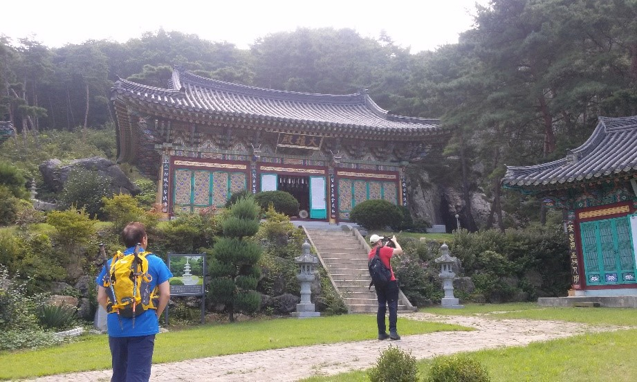
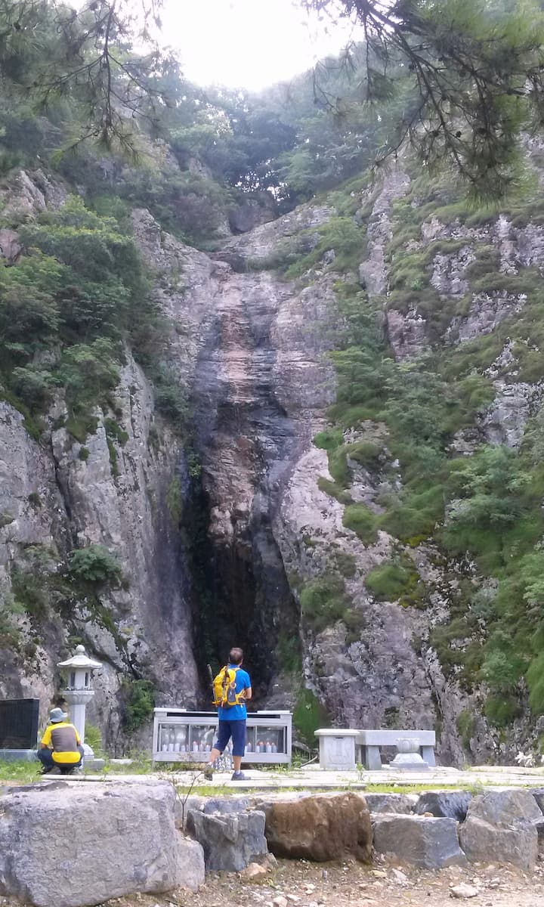
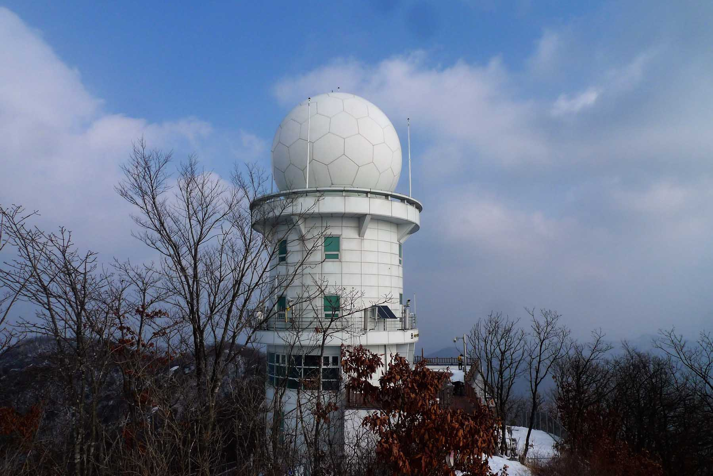
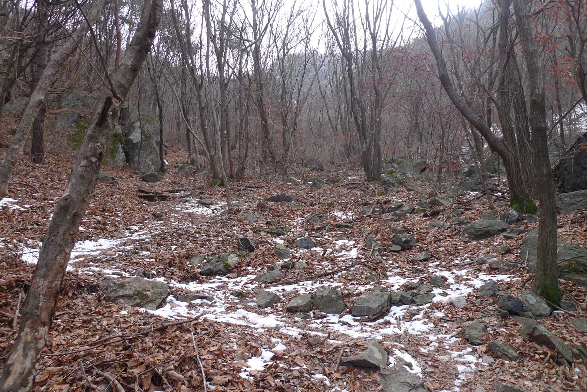
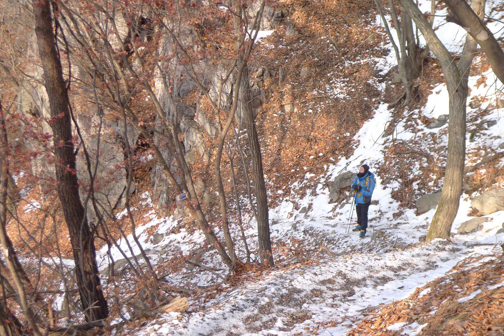

SeoDaeSan (서대산) Hike (904m)

SeoDaeSan (서대산), located about one hour drive from Daejeon, is the tallest mountain in ChungCheongNamDo (충청남도) so don’t
expect an easy hike if your goal is to reach the summit at 904 meters high. When you arrive in the parking lot, carefully
examine the large map which shows 4 trails (in Korean 1 - 4 코스) from this position to the summit which is marked with a
yellow triangle and the word “정상” meaning summit. If you had taken a look at Naver maps before heading out for this hike you
might be confused at first glance of the giant billboard map of this side of SeoDaeSan (서대산) so let me explain. At the
bottom of the billboard map is a red dot with 현위치 which means present location and the yellow triangle signifying the summit
at the top of the map. So it looks as though you are heading north to the summit but in actual fact the parking lot is
located northwest of the summit therefore this is a view of the trails leading to the mountain from the northwest. A naver
map search will show you that there are additional trails to the mountain from the east, south and southwest directions.
Gaedeoksa temple (개덕사)

We started at the Buddhist temple known as Gaedeoksa (개덕사) of which there is a photo next to this description. It is a
rather typical Buddhist temple with a unique feature. The Gaedeok (개덕폭포) waterfall offers a refreshing background drop to an
altar of worship and large metal / glass case full of burning candles. One hopes with the real threat of forest fires that
the case of candles is monitored closely. There are other temples to visit if you choose a different starting place or go
down another side of the mountain which is difficult to do if you’ve got a car in the parking lot on the opposite side of
the mountain. HengGukSa (흥극사) is located East of the mountain a 2 km walk from the summit and to the west of the summit is
SeoDaeSa (서대사) which dates from 851 AD. It is quite amazing that it is generally known when many of these ancient temples
were first established exactly but fortunately Buddhist Monks were educated and excellent record keepers. At that time, the
year of construction would have been noted not as 851 AD but according to the year of reign of the current king. For example
SeoDaeSa (서대사) was established during 13th year in the reign of King MunSeong (문성왕) of the late Shilla (신라) dynasty, a time
of strife, which corresponds to 851 AD.
GaeDeok Waterfall

Behind the temple is the GaeDeok (개덕폭포) waterfall which offers a refreshing background drop to an altar of worship and large
metal / glass case full of burning candles. One hopes with the real threat of forest fires that the case of candles is
monitored closely. There is a sign in Korean advising if wish to have a candle lit for your wishes to please pay at the
temple and the fee is 10,000 won. Although the waterfall was not overflowing with water when we visited (but during monsoon
season that changes), it is impressive for its height as well as the size of the sheer rock face hollowed out in the center
from years of water erosion on which the clear and clean water splashes down. Find a place of beauty in the mountains of
Korea and there is bound to be a Buddhist temple nearby.
A giant white soccer ball

With such a formidable climb ahead, it is imperative to not loiter too long at the Buddhist temples and proceed onwards.
There are some sights of interest on the way to the summit depending on the course (코스) you choose to take such as notable
rocks like 마담바위 and 용바위 (바위 meaning rock), 구름다리 meaning cloud bridge or 서대폭포, another waterfall. This day we went up course
3 and down course 2. We faced a steep trail that had no breaks, it was an up and up hike. We did take two minor breaks, one
at 12:10 p.m. and another at 1:00 p.m. As was to be expected, the last 0.3km was the most difficult and the steepest. I
remember it being particularly difficult in the winter especially when there is snow on the ground. We finally reached the
top at 1:30 p.m. Standing quite prominently on the top is a white, large radar tower which is shaped like a soccer ball.
There was a board platform at the base of the radar tower and this made a convenient place to eat. On a few hikes the
building was open and there was an interesting display on the walls that presented some information about the tower. The
stone plaque indicating the name and height of the summit was placed on a large pile of rather ominously piled boulders.
Heading back

We started down the mountain at 2:15 p.m. Although the first portion of the trail is was steep with challenging places, you
can trust the Koreans to place ropes in the most difficult areas to assist with your descent. One portion of this trail was
particularly interesting as we actually passed through a deep cleft in the rocks. About 1 kilometer from the HeungGukSa
(흥국사) temple was a trail junction, then about two thirds of the way down way down the trail becomes very steep but you are
soon rewarded for your efforts with a splendid view of the rocky valley below. By 4:15 p.m. we had reached a spring where we
filled our empty canteens and by 4:30 p.m. we were walking to the parking lot where the car was located.
Summary of hike

This is not a hike for the faint at heart, those with weak knees or without stamina to endure a day of physical exertion with
a few challenges. The trail is steep and in places very steep. There are ropes judicially placed in most of these more
difficult locations. If you are in good condition and have the whole day for the hike, it is well worth doing and you will
be able to proudly boast that you have hiked one of the higher mountains in central Korea. If you enjoyed this hike, there
are numerous ways to reach the summit with each one offering a unique perspective and its own scenic temptations.